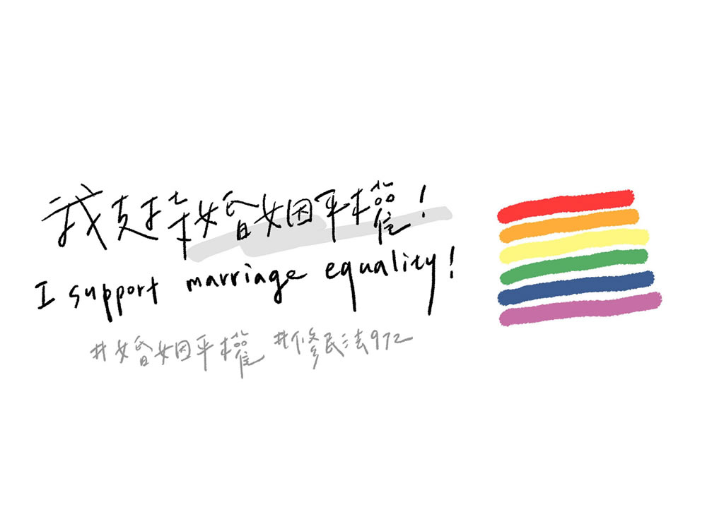
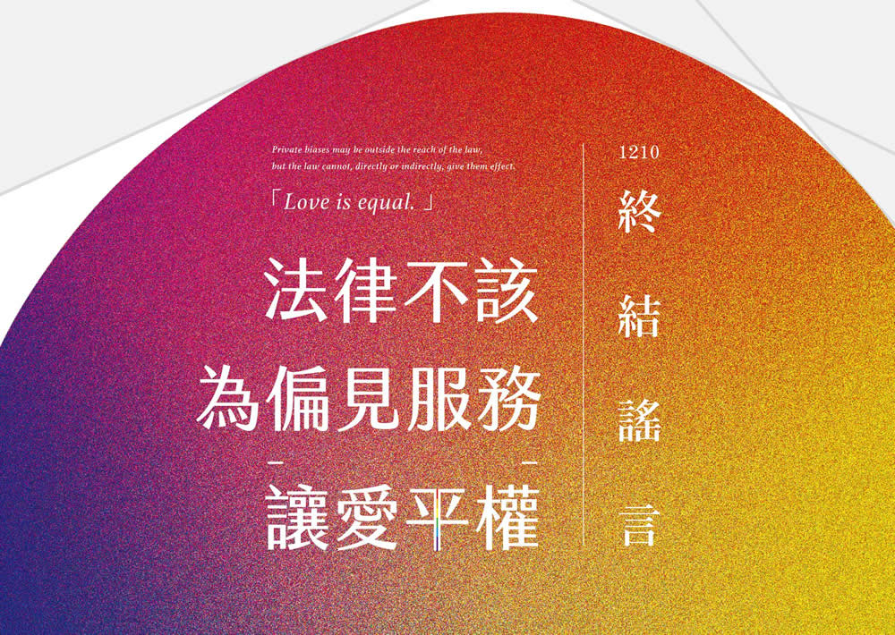
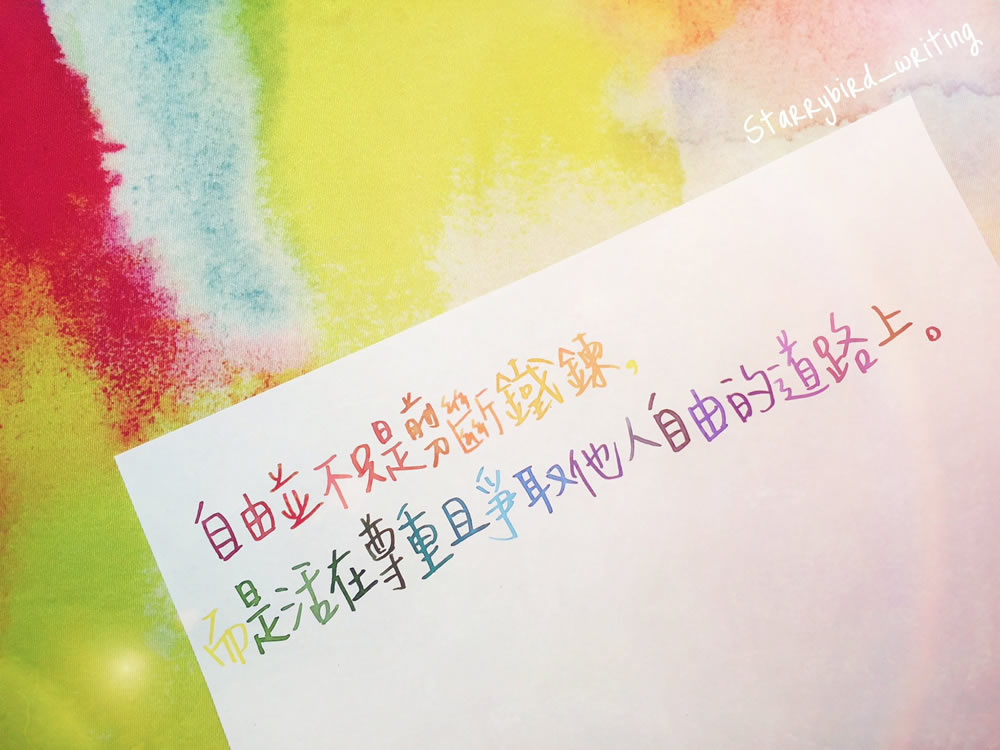
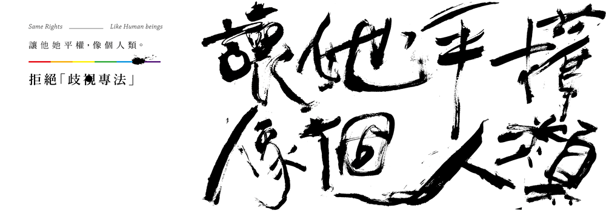
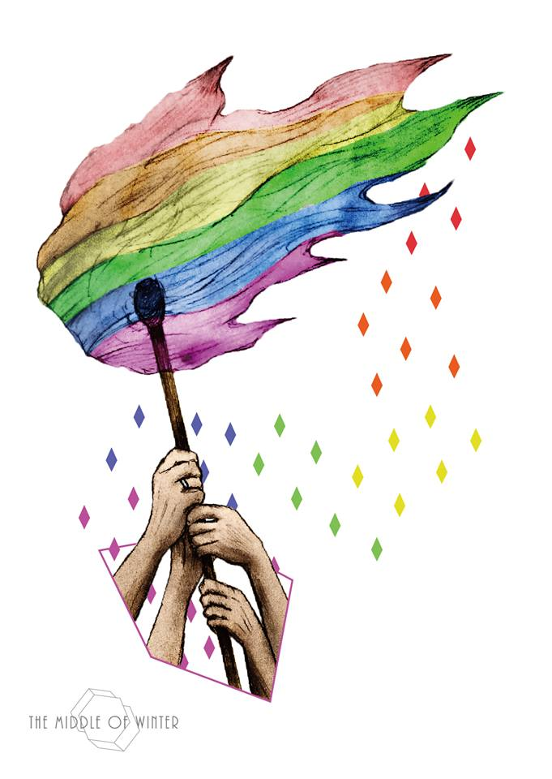
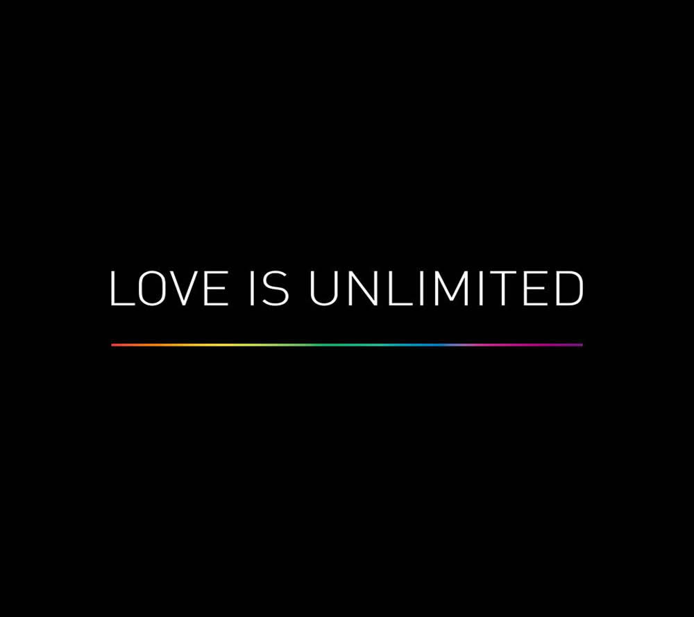
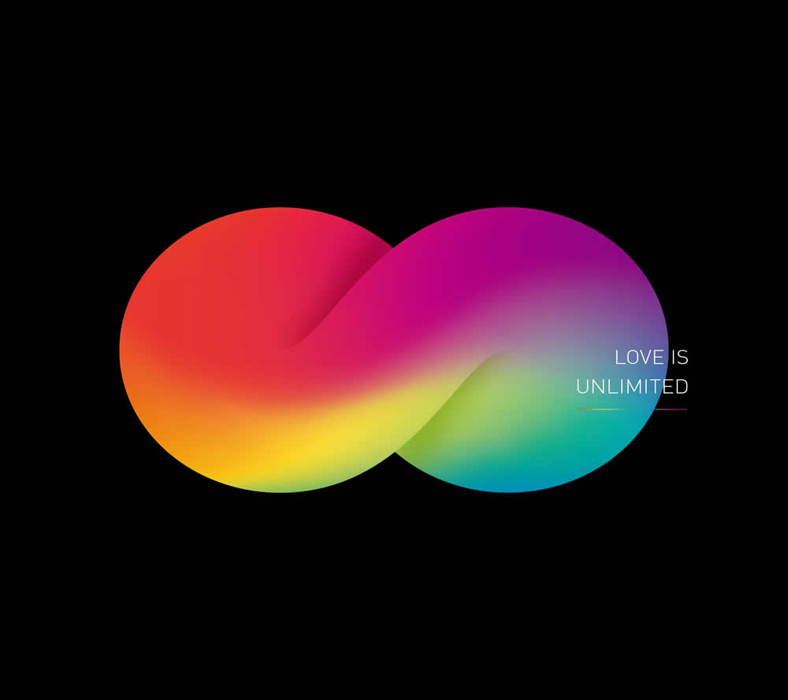
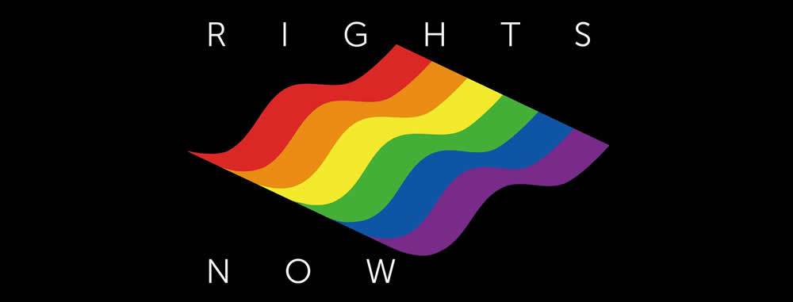

這麼多靜靜逝去的生命，你們真的都不在乎嗎?
You don't really care about those who were isolated by the world.
/ Don't you really care? /
重要法律的通過往往和生命殞落有關。彭婉如的過世催生了性侵害犯罪防治法；
葉永誌的身亡加速了性別平等教育法的通過；
而畢安生的離去則掀起了婚姻平權的再一次熱潮。
石濟雅、林青慧、邱妙津、葉永鋕、鷺江楊同學、鄒基麥、畢安生......還要犧牲多少性少數的生命，才能換來平權？
護家盟成員在立法院外宣稱，若婚姻平權通過要「死給尤美女看」，
而這麼多這麼多靜靜逝去的生命，你們真的都不在乎嗎？
文 / 婚姻平權，基本人權 圖 / 字由公寓 2.0 Liberty Apartment 2.0
BACK
聽你聽我 讓愛平權
Love is equal.
BACK

我支持婚姻平權!
這個世界上從來沒有什麼事情本來就該是什麼模樣。
或許在資本社會之下，世界有它運轉的樣子，但更重要的是我們所支持的價值。
我們共同存在在這個世界上，甚至更親近的生活在同一個島嶼、城市，
受著同一部法律控制。
婚姻平權不是一個起點，也不會是終點，但這件事特別的是可以讓人保護自己所愛的。
這好像是我們這個世代的責任，
不斷溝通對話，讓更自由平權的價值普及。
這個世界的樣子，每一刻都不一樣。
也意味著，我們有機會讓世界離我們想要的樣子更近一些。
BACK
Love is Equal
我們的愛 沒有不同
BACK

法律不該為偏見服務／讓愛平權
終結謠言
BACK

「自由並不只是剪斷鐵鍊，而是活在尊重且爭取他人自由的道路上。」
「For to be free is not merely to cast off one's chains, but to live in a way that respects and enhances the freedom of others.」
Nelson Mandela
BACK


「讓他她平權，像個人類。」
「讓我平權，像個人類。」
BACK

「我希望有道溫柔的火炬指引受傷的人」
為什麼/真正需要被救贖的人/整日渴望拯救別人
你的出生/不是一個錯誤/我們不該一心向神/我們應該/與神同住
任明信〈目的〉
\
看厭了所有以愛包裝的惡意與歧視，所以更期許自己成為善良堅定者。
受傷的人啊，請再撐著一下，我們就要抵達。
BACK

LOVE IS UNLIMITED
BACK

LOVE IS UNLIMITED
BACK

SEE MY RIGHTS NOW
BACK
「婚姻平權，刻不容緩：Over my GAY Body！」
反同團體的仇恨言論，
就像是整個社會對於多元性別的壓迫與歧視，就是這樣的仇恨教導出殺死葉永鋕的兇手。
然而，在這一片仇恨之中，我們看見了鄉民女神四叉貓 劉宇。
即便身在反同團體中，他仍然用力綻放搖曳自己。
我們不能被打敗，尤其在婚姻平權法案通過的重要關頭，我們必須更加堅強、勇敢。
BACK